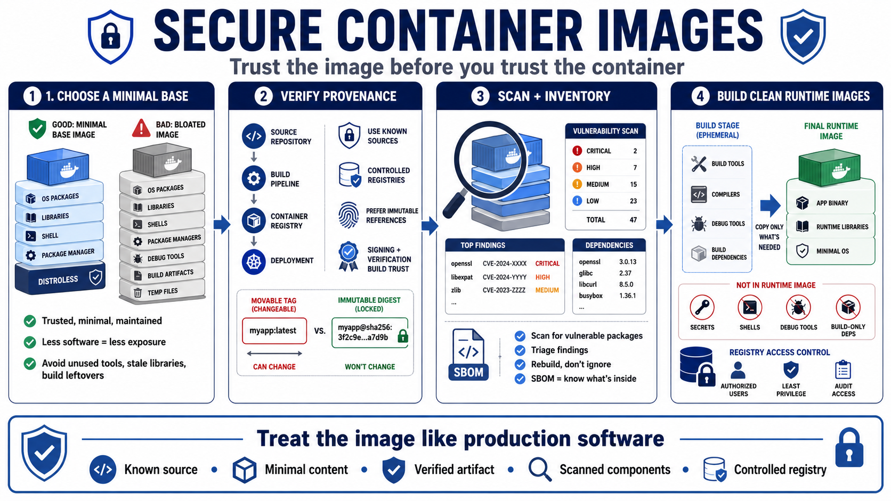

Secure Images and Supply Chain Hygiene
Connecting to LMS... Progress: in progress

Narration
Secure containers start before deployment. Base image selection brings operating system packages, libraries, defaults, user accounts, and potential vulnerabilities into the application image. A trusted, minimal, well-maintained base image reduces what the runtime container carries. An image full of unused package managers, shells, debugging tools, stale libraries, or build artifacts increases both exposure and maintenance burden.
Image provenance answers where an image came from, how it was built, and whether it should be trusted. Teams should prefer known sources, controlled registries, reviewable build pipelines, immutable image references where practical, and clear ownership. Tags are convenient labels, but they can move. Immutability concepts, digests, image signing, and verification help teams reason about exactly what artifact is being deployed.
Dependency management and vulnerability scanning are ongoing practices. Scanning can identify known vulnerable packages in images and dependencies, but it is not a complete security program. Results need triage, rebuild workflows, exception handling, and ownership. Software bills of materials, at a high level, help teams understand what components are present so vulnerability response and compliance reviews are grounded in inventory rather than guesswork.
Runtime images should avoid unnecessary secrets, tools, shells, and build-only content. Multi-stage builds, careful copy steps, and clean dependency practices can produce smaller and more focused artifacts. Registry access control is also part of supply chain hygiene: unauthorized pulls can expose sensitive artifacts, and unauthorized pushes can introduce untrusted images. The image should be treated as production software, not as a disposable packaging detail.